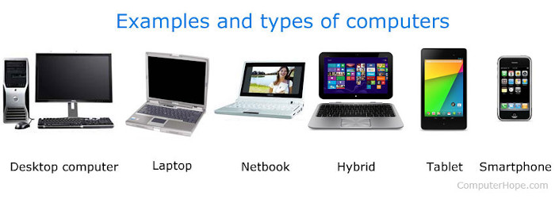

Computers
What are computers types?
When talking about a computer or a "PC," you are usually referring to a desktop computer that you would find in a home or office. Today, however, the lines of what makes a computer are blurring. Below are all the different examples of what is considered a computer today.

The picture above shows several types of computers and computing devices, and is an example of their differences. Below is a complete list of computers of past and present.
- Console (e.g., Xbox and PS3)
- Custom-built PC
- Desktop computer
- Diskless workstation and Thin client
- Embedded computers - The most common and used computer. An embedded computer is a computer with a specific function, found in such things as ATMs, cars, microwaves, TVs, the VCR, and other home electronics.
- Gaming computer - Laptop, portable, notebook computer
- Mainframe, Supercomputer, Server
- Microcomputer, Nanocomputer, Netbook, PDA, Stick computer
- Smartphone, Tablet